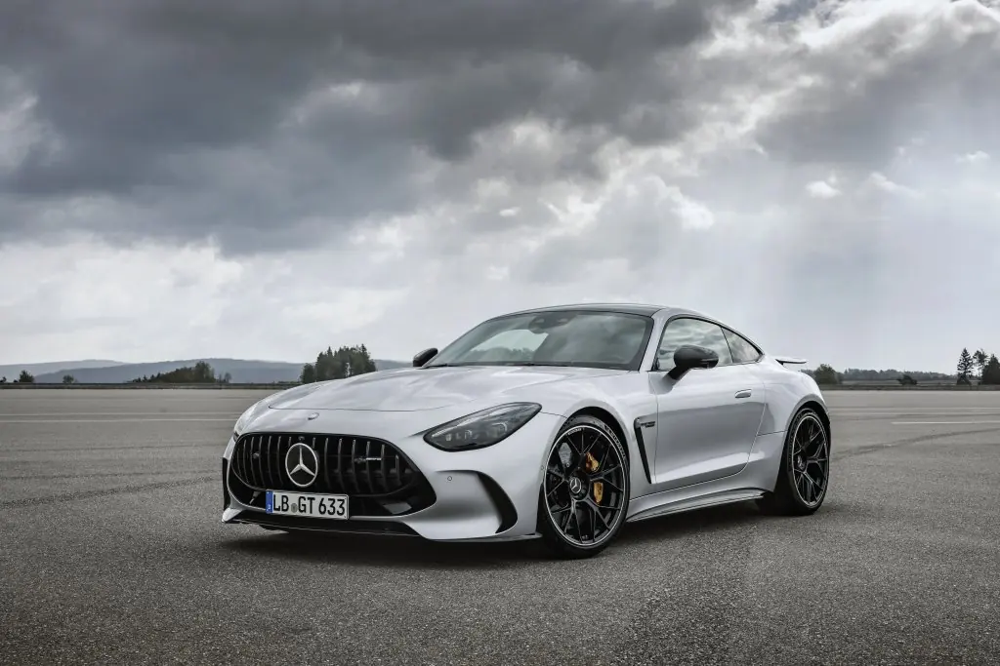

AMG · MY27
Mercedes-AMG GT Coupé
6개 연식·트림 · 권장 소비자가 14,950만원 ~ 28,310만원 (VAT 포함). 트림을 선택하면 제원·옵션·장비가 함께 바뀝니다.

Official highlights
Mercedes-AMG GT Coupé
AMG가 독자 개발한 2도어 스포츠카로, V8 바이터보와 AMG Performance 4MATIC+를 갖췄습니다.
4.0L V8 바이터보
AMG Performance 4MATIC+ 사륜구동(트림별).
AMG 액티브 라이드 컨트롤
능동형 서스펜션으로 민첩한 핸들링.
실용성
접이식 뒷좌석과 넉넉한 트렁크.
출처: 메르세데스-벤츠 코리아 공식 홈페이지 · 검색 색인 요약 기반, 최신 내용은 공식 페이지에서 확인. 사양·옵션은 세부 모델에 따라 다르게 적용되며 일부는 유료 사양입니다.
Trim & price
트림부터 비교하세요
연식: MY27 · MY26
MY27 · 선택한 트림
Mercedes-AMG GT 43
권장 소비자가 14,950만원 (149,500,000원) · VAT 포함 · 기준: 2026년 10월 14일 메르세데스-벤츠 코리아 공식 가격표
제원
이 트림의 상세 제원은 공개 자료 확정 후 반영됩니다. 상담 시 최신 제원표로 안내해 드립니다.
옵션 · 색상
기본 = 기본 적용 · 선택/유료 선택 = 주문 시 선택 · 미적용 = 해당 트림 미적용 · 표시 항목은 눌러서 메르세데스-벤츠 코리아 공식 이미지를 볼 수 있습니다
외장 컬러 (20)
실내 시트·소재 (7)
장비 구성
디스플레이·오디오 (13)
주행·승차감 (2)
안전·주차 (12)
시트·공간 (3)
외관·생활 편의 (10)
실내 편의 (6)
MY27 · 선택한 트림
Mercedes-AMG GT 55 4MATIC+
권장 소비자가 21,260만원 (212,600,000원) · VAT 포함 · 기준: 2026년 10월 14일 메르세데스-벤츠 코리아 공식 가격표
제원
이 트림의 상세 제원은 공개 자료 확정 후 반영됩니다. 상담 시 최신 제원표로 안내해 드립니다.
옵션 · 색상
기본 = 기본 적용 · 선택/유료 선택 = 주문 시 선택 · 미적용 = 해당 트림 미적용 · 표시 항목은 눌러서 메르세데스-벤츠 코리아 공식 이미지를 볼 수 있습니다
외장 컬러 (20)
실내 시트·소재 (7)
장비 구성
디스플레이·오디오 (13)
주행·승차감 (2)
안전·주차 (12)
시트·공간 (3)
외관·생활 편의 (11)
실내 편의 (7)
MY27 · 선택한 트림
Mercedes-AMG GT 63 S E Performance
권장 소비자가 28,310만원 (283,100,000원) · VAT 포함
제원
이 트림의 상세 제원은 공개 자료 확정 후 반영됩니다. 상담 시 최신 제원표로 안내해 드립니다.
옵션 · 색상
기본 = 기본 적용 · 선택/유료 선택 = 주문 시 선택 · 미적용 = 해당 트림 미적용 · 표시 항목은 눌러서 메르세데스-벤츠 코리아 공식 이미지를 볼 수 있습니다
외장 컬러 (20)
실내 시트·소재 (7)
장비 구성
디스플레이·오디오 (13)
주행·승차감 (4)
안전·주차 (13)
시트·공간 (4)
외관·생활 편의 (10)
실내 편의 (7)
충전·전기차 기능 (1)
MY26 · 선택한 트림
Mercedes-AMG GT 43
권장 소비자가 14,950만원 (149,500,000원) · VAT 포함 · 기준: 2026년 7월 1일 26MY 가격표
제원
이 트림의 상세 제원은 공개 자료 확정 후 반영됩니다. 상담 시 최신 제원표로 안내해 드립니다.
옵션 · 색상
기본 = 기본 적용 · 선택/유료 선택 = 주문 시 선택 · 미적용 = 해당 트림 미적용
컬러·옵션 구성은 상담 시 안내해 드립니다.
MY27 Mercedes-AMG GT 43 옵션·색상 참고하기 → (연식에 따라 구성이 다를 수 있어 최종 사양은 상담 시 확인)
장비 구성
이 트림의 상세 장비표는 아래 “주요 사양 비교”와 상담을 통해 확인해 주세요.
MY26 · 선택한 트림
Mercedes-AMG GT 55 4MATIC+
권장 소비자가 21,000만원 (210,000,000원) · VAT 포함 · 기준: 2026년 10월 14일 메르세데스-벤츠 코리아 공식 가격표
제원
이 트림의 상세 제원은 공개 자료 확정 후 반영됩니다. 상담 시 최신 제원표로 안내해 드립니다.
옵션 · 색상
기본 = 기본 적용 · 선택/유료 선택 = 주문 시 선택 · 미적용 = 해당 트림 미적용
컬러·옵션 구성은 상담 시 안내해 드립니다.
MY27 Mercedes-AMG GT 55 4MATIC+ 옵션·색상 참고하기 → (연식에 따라 구성이 다를 수 있어 최종 사양은 상담 시 확인)
장비 구성
이 트림의 상세 장비표는 아래 “주요 사양 비교”와 상담을 통해 확인해 주세요.
MY26 · 선택한 트림
Mercedes-AMG GT 63 S E Performance
권장 소비자가 28,000만원 (280,000,000원) · VAT 포함 · 기준: 2026년 10월 14일 메르세데스-벤츠 코리아 공식 가격표
제원
이 트림의 상세 제원은 공개 자료 확정 후 반영됩니다. 상담 시 최신 제원표로 안내해 드립니다.
옵션 · 색상
기본 = 기본 적용 · 선택/유료 선택 = 주문 시 선택 · 미적용 = 해당 트림 미적용
컬러·옵션 구성은 상담 시 안내해 드립니다.
MY27 Mercedes-AMG GT 63 S E Performance 옵션·색상 참고하기 → (연식에 따라 구성이 다를 수 있어 최종 사양은 상담 시 확인)
장비 구성
이 트림의 상세 장비표는 아래 “주요 사양 비교”와 상담을 통해 확인해 주세요.
Compare
주요 사양 비교
MY27 트림별 주요 사양
| 항목 | Mercedes-AMG GT 43 | Mercedes-AMG GT 55 4MATIC+ | Mercedes-AMG GT 63 S E Performance |
|---|---|---|---|
| 기본 휠 | 20인치 AMG 휠 | 21인치 AMG 휠 | 21인치 AMG 휠 |
| 서스펜션 | AMG 서스펜션 | AMG 액티브 라이드 컨트롤 서스펜션 | AMG 액티브 라이드 컨트롤 서스펜션 |
| 시트 마사지·컨투어 | 멀티컨투어 시트 | 멀티컨투어 시트 | 멀티컨투어 시트 패키지 |
| 앞차축 리프트 | 미적용 | 미적용 | 프론트 액슬 리프트 시스템 |
| 충전·열관리 | 미적용 | 미적용 | AC 온보드 차저 |
| 기본 실내 장식 | AMG 알루미늄 트림 | AMG 알루미늄 트림 | AMG 알루미늄 트림 |
| 온도 조절 | 자동 온도 조절 시스템 | 자동 온도 조절 시스템 | 자동 온도 조절 시스템 |
| 열선 스티어링 휠 | 열선 스티어링 휠 | 열선 스티어링 휠 | 열선 스티어링 휠 |
| 트렁크 편의 | 전동 트렁크 | 전동 트렁크 | 전동 트렁크 |
전 트림 공통: 후륜 조향 · 헤드램프 · 프리미엄 오디오 · 앞좌석 시트 · 헤드업 디스플레이 · 루프 · 주차 보조 · 주행 보조
Colours
색상 · 소재
위 트림 상세의 외장 컬러·시트·장비 항목 중 카메라 아이콘이 있는 항목을 누르면 메르세데스-벤츠 코리아 공식 컨피규레이터 이미지를 볼 수 있습니다. 화면의 색감은 실제와 다를 수 있으니 전시장 실차·샘플로 확인해 주세요.
트림별 옵션·색상은 위 트림 상세에서 확인하세요.
Other models
다른 차종
Private consultation
차민재 팀장에게
직접 물어보세요
희망 차종·예산·구매 시기와 방식(현금·할부·리스·렌트)을 알려주시면, 이달 조건과 재고를 함께 맞춰 견적을 드립니다.